Graphical models#
Material from Russell and Norvig "Artifical Intelligence" 3rd Edition and Jordan "Graphical Models"
About this chapter
A graphical model writes a joint distribution as a product of small pieces: one per node given its parents (directed), or one potential per clique (undirected). Missing edges are conditional independence statements, and they are what keeps inference tractable. The chapter starts with Bayesian networks from Russell and Norvig: exact and approximate inference, and how to read independence off the graph (d-separation, Bayes ball).
The middle sections follow Jordan: the elimination algorithm and why its cost depends on the treewidth, message passing (sum-product) on trees and factor graphs, and MAP inference. The last part is about models over time: filtering, prediction, smoothing and the Viterbi algorithm in a dynamic Bayes net, then HMMs (discrete state), Kalman filters (continuous, linear-Gaussian state) and particle filters.
Chapter outline: 7 sections
- Overview1 figure
- Bayesian networks - Russell & Norvig 14.1-14.5 + Jordan ch 21 interactive4 figuresA Bayesian network is a DAG with a conditional probability table at each node.
- Undirected2 figuresUndirected models drop the arrows.
- Elimination - Jordan ch 3Elimination sums out variables one at a time in a chosen order.
- Propagation factor graphs - Jordan ch 48 figuresOn a tree, elimination can be organized as messages along the edges.
- Dynamic bayesian nets1 interactive2 figuresA dynamic Bayes net repeats the same slice over time, with a transition model P(X_t\vert X_{t-1}) and a sensor model P(E_t\vert X_t).
- Structure learning
Overview#
network types
bayesian networks - directed
undirected models
latent variable types
mixture models - discrete latent variable
factor analysis models - continuous latent variable
graph representation: missing edges specify independence (converse is not true)
encode conditional independence relationships
helpful for inference
compact representation of joint prob. distr. over the variables

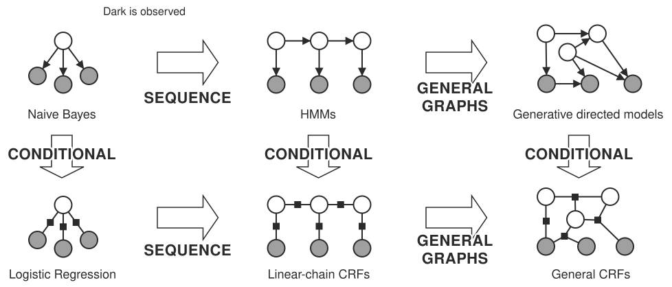
Fig. 26 Figure 1. Generative models (top) and their conditional counterparts (bottom). Moving right goes from single outputs to sequences to general graphs; moving down conditions on the inputs, e.g. naive Bayes becomes logistic regression and HMMs become linear-chain CRFs.#
dark is observed for HMMs, for other things unclear what it means
Bayesian networks - Russell & Norvig 14.1-14.5 + Jordan ch 2#
A Bayesian network is a DAG with a conditional probability table at each node. The joint distribution is the product of each node’s probability given its parents, and the graph says that a node is independent of its non-descendants given its parents.
examples
causal model: causes \(\to\) symptoms
diagnostic model: symptoms \(\to\) causes
generally requires more dependencies
learning
expert-designed
data-driven
properties
each node is random variable
weights as tables of conditional probabilities for all possibilities
represented by directed acyclic graph
joint distr: \(P(X_1 = x_1,...X_n=x_n)=\prod_{i=1}^n P[X_i = x_i \vert Parents(X_i)]\)
markov condition: given parents, node is conditionally independent of its non-descendants
marginally, they can still be dependent (e.g. explaining away)
given its markov blanket (parents, children, and children’s parents), a node is independent of all other nodes
BN has no redundancy \(\implies\) no chance for inconsistency
forming a BN: keep adding nodes, and only previous nodes are allowed to be parents of new nodes
Hybrid BN (both continuous & discrete vars)#
for continuous variables can sometimes discretize
linear Gaussian - for continuous children
parents all discrete \(\implies\) conditional Gaussian - multivariate Gaussian given assignment to discrete variables
parents all continuous \(\implies\) multivariate Gaussian over all the variables, and a multivariate posterior distribution (given any evidence)
parents some discrete, some continuous
h is continuous, s is discrete; a, b, \(\sigma\) all change when s changes
\(P(c\vert h,s) = N(a \cdot h + b, \sigma^2)\), so mean is linear function of h
discrete children (continuous parents)
probit distr - \(P(buys\vert Cost=c) = \phi[(\mu - c)/\sigma]\) - integral of standard normal distr
like a soft threshold
logit distr. - \(P(buys\vert Cost=c) =s\left(\frac{-2 (\mu - c)}\sigma \right)\)
logistic function (sigmoid s) produces thresh
Exact inference#
Inference means computing \(P(X\vert e)\) for query variables \(X\) given evidence \(e\), summing out the hidden variables. Enumeration does the sum directly, variable elimination reuses partial sums, and clustering turns the network into a polytree first.
given assignment to evidence variables E, find probs of query variables X
other variables are hidden variables H
enumeration - just try summing over all hidden variables
\(P(X\vert e) = \alpha P(X, e) = \alpha \sum_h P(X, e, h)\)
\(\alpha\) can be calculated as \(1 / \sum_x P(x, e)\)
\(O(n \cdot 2^n)\)
one summation for each of n variables
ENUMERATION-ASK evaluates in depth-first order: \(O(2^n)\)
we removed the factor of n
variable elimination - dynamic programming (see elimination)
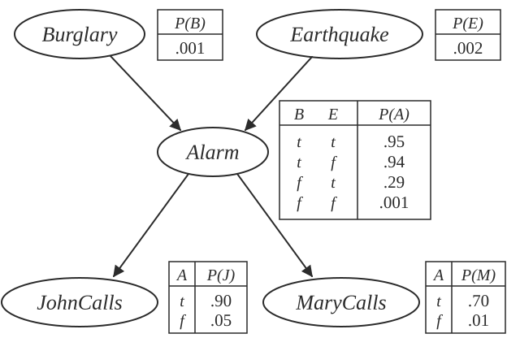
Fig. 27 Figure 2. The burglary network with its conditional probability tables. Burglary and Earthquake both cause the Alarm, which causes John and Mary to call.#
\(P(B\vert j, m) = \alpha \underbrace{P(B)}_{f_1(B)} \sum_e \underbrace{P(e)}_{f_2(E)} \sum_a \underbrace{P(a\vert B,e)}_{f_3(A, B, E)} \underbrace{P(j\vert a)}_{f_4(A)} \underbrace{P(m\vert a)}_{f_5(A)}\)
calculate factors in reverse order (bottom-up)
each factor is a vector with num entries = \(\prod\) |num_elements| * |num_values|
when we multiply them, pointwise products
ordering
any ordering works, some are more efficient
every variable that is not an ancestor of a query variable or evidence variable is irrelevant to the query
complexity depends on largest factor formed
clustering algorithms = join tree algorithms (see propagation factor graphs)
join individual nodes in such a way that resulting network is a polytree
Fig. 28 Figure 3. The burglary network with its conditional probability tables. Burglary and Earthquake both cause the Alarm, which causes John and Mary to call.#
polytree=singly-connected network - only 1 undirected paths between any 2 nodes
time and space complexity of exact inference is linear in the size of the network
holds even if the number of parents of each node is bounded by a constant
can compute posterior probabilities in \(O(n)\)
however, conditional probability tables may still be exponentially large

Approximate inferences in BNs#
When exact inference is too expensive: sample from the network directly (rejection sampling, likelihood weighting), run a Markov chain whose stationary distribution is the posterior (MCMC), or turn inference into optimization (variational inference).
randomized sampling algorithms = monte carlo algorithms
direct sampling methods:
simplest - sample network in topological order
rejection sampling - sample in order and stop once evidence is violated
want P(D|A)
sample N times, throw out samples where A is false
return probability of D being true
this is slow
likelihood weighting - fix evidence to be more efficient
generating a sample
fix our evidence variables to their observed values, then simulate the network
can’t just fix variables - distr. might be inconsistent
calculate W = prob of sample being generated
when we get to an evidence variable, multiply by prob it appears given its parents
for each observation
if positive, Count = Count + W
Total = Total + W
return Count/Total
this way we don’t have to throw out wrong samples
doesn’t solve all problems - evidence only influences the choice of downstream variables
Markov chain monte carlo - ex. Gibbs sampling, Metropolis-Hastings
fix evidence variables
sample a nonevidence variable \(X_i\) conditioned on the current values of its Markov blanket
repeatedly resample one-at-a-time in arbitrary order
why it works
the sampling process settles into a dynamic equilibrium where time spent in each state is proportional to its posterior probability
provided transition matrix q is ergodic - every state is reachable and there are no periodic cycles - only 1 steady-state soln
2 steps
create markov chain with write stationary distr.
draw samples by simulating the chain
methods
0th order methods - query density
metropolized random walk
ball walk
hit-and-run algorithm
1st order methods - uses gradient of the density
Gibbs: we have conditionals
metropolis adjusted langevin algorithm (MALA) = langevin monte carlo
use gradient to propose new states
accept / reject using metropolis-hastings algorithm
unadjusted langevin algorithm (ULA)
hamiltonian monte carlo (neal, 2011)
log-concave distr. density (analog of convexity)
\(\pi(x) = \frac{e^{-f(x)}}{\int e^{-f(y)}dy}\)
examples: normal distr., exponential distr., Laplace distr.
variational inference - formulate inference as optimization
good intro paper (blei et al. 2016)
minimize KL-divergence between observed samples and assumed distribution
the actual KL is hard to minimize so instead we maximize the ELBO, which is equivalent
do this over a class of possible distrs.
variational inference tends to be faster, but may not be as good as MCMC
Conditional independence properties#
The graph says which variables are independent given others. The odd case is the v-structure: its two parents are independent until the child, or any descendant of it, is observed, and then they become dependent (explaining away).
multiple, competing explanations (“explaining-away”)
(a) The missing edge in this graph corresponds to the marginal independence statement X ⫫ Z. As shown in (b), this is a statement about the subgraph defined on X and Z. Note moreover that conditioning on Y does not render X and Z independent, as would be expected from a naive characterization of conditional independence in terms of graph separation

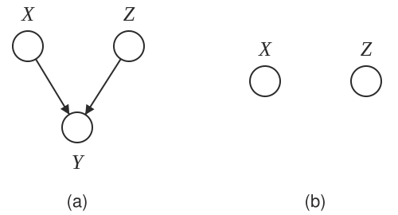
Fig. 29 Figure 4. (a) The v-structure \(X \to Y \leftarrow Z\). (b) Its subgraph on \(X\) and \(Z\) has no edge, so \(X \perp Z\) marginally, but observing \(Y\) makes them dependent.#
in fact any descendant of the base of the v suffices for explaining away
d-separation = directed separation
Bayes ball algorithm - is \(( X_A \perp X_B )\vert X_C\)?
initialize
shade \(X_C\)
place ball at each of \(X_A\)
if any ball reaches \(X_B\), then not conditionally independent
rules
balls can’t pass through shaded unless shaded is at base of v
balls pass through unshaded unless unshaded is at base of v
active triples; Inactive triples
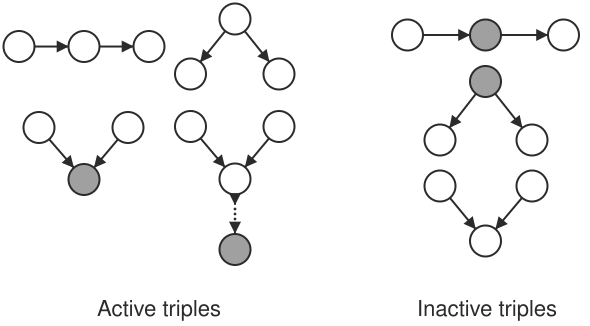
Fig. 30 Figure 5. Active triples pass dependence along (left) and inactive triples block it (right); shaded nodes are observed. The v-structure is the reverse of the others, active only when its child or a descendant of it is observed.#

Undirected#
Undirected models drop the arrows. Independence is plain graph separation, and the joint is a product of potentials over the maximal cliques divided by a normalizer \(Z\). Neither kind of graph can express every independence structure of the other.
\(X_A \perp X_C \vert X_B\) if the set of nodes \(X_B\) separates the nodes \(X_A\) from \(X_C\)
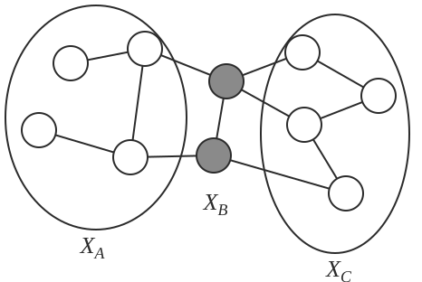
Fig. 31 Figure 6. Every path from \(X_A\) to \(X_C\) goes through \(X_B\), so \(X_A \perp X_C \vert X_B\).#
can’t convert directed / undirected


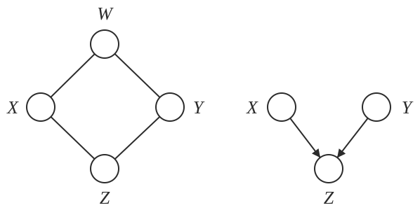
Fig. 32 Figure 7. Neither kind of graph covers the other. No directed graph has the independences of the undirected four-cycle (left), and no undirected graph has those of the v-structure (right).#
factor over maximal cliques (largest sets of fully connected nodes)
potential function \(\corange{\psi_{X_C} (x_C)}\) function on possible realizations \(x_C\) of the maximal clique \(X_C\)
non-negative, but not a probability (specifying conditional probs. doesn’t work)
commonly let these be exponential: \(\psi_{X_C} (x_C) = \exp(-f_C(x_C))\)
yields energy \(f(x) = \sum_C f_C(x_C)\)
yields Boltzmann distribution: \(p(x) = \frac{1}{Z} \exp (-f(x))\)
\(p(x) = \cblue{\frac{1}{Z}} \prod_{C \in Cliques} \corange{\psi_{X_C}(x_c)}\)
normalizer \(\cblue{Z} = \sum_x \prod_{C \in Cliques} \corange{\psi_{X_C} (x_C)}\)
reduced parameterizations - impose constraints on probability distributions (e.g. Gaussian)
if x is dependent on all its neighbors
Ising model - if x is binary
Potts model - x is multiclass
Elimination - Jordan ch 3#
Elimination sums out variables one at a time in a chosen order. Each step multiplies the potentials that mention the variable and sums it out, and the cost is exponential in the size of the largest clique this creates, so the ordering matters.
the elimination algorithm is for probabilistic inference
want \(p(x_F\vert x_E)\) where E and F are disjoint
any var that is not ancestor of evidence or ancestor of query is irrelevant
here, let \(X_F\) be a single node
notation
define \(m_i (x_{S_i})\) = \(\sum_{x_i}\) where \(x_{S_i}\) are the variables, other than \(x_i\), that appear in the summand
define evidence potential \(\delta(x_i, \bar{x_i})\) is defined as \(x_i == \bar{x_i}\)
then \(g(\bar{x_i}) = \sum_{x_i} \delta (x_i, \bar{x_i})\)
for a set \(\delta (x_E, \bar{x_E}) = \prod_{i \in E} \delta (x_i, \bar{x_i})\)
lets us define \(p(x, \bar{x}_E) = p^E(x) = p(x) \delta (x_E, \bar{x_E})\)
undirected graphs
\(\psi_i^E(x_i) \triangleq \psi_i(x_i) \delta(x_i, \bar{x}_i)\)
this lets us write \(p^E (x) = \frac{1}{Z} \prod_{c\in C} \psi^E_{X_c} (x_c)\)
can ignore z since this is unnormalized anyway
to find conditional probability, divide by all sum of \(p^E(x)\) for all values of E
in actuality don’t compute the product, just take the correct slice
eliminate algorithm
initialize: choose an ordering with query last
evidence: set evidence vars to their values
update: loop over element \(x_i\) in ordering
let \(\phi_i(x_{T_i})\) be product of all potentials involving \(x_i\)
sum over the product of these potentials \(m_i(x_{S_i}) = \sum_x \phi_i(x_{T_i})\)
normalize: \(p(x_F\vert \bar{x}_E) = \phi_F(x_F) / \sum_{x_F} \phi_F (x_F)\)
undirected graph elimination algorithm
for directed graph, first moralize
for each node connect its parents
drop edges orientation
for each node X
connect all remaining neighbors of X
remove X from graph
reconstituted graph - same nodes, includes all edges that were added
elimination cliques - includes X and its neighbors when X is removed
computational complexity is the exponential in the number of variables in the elimination clique
involves treewidth - one less than smallest achievable value of cardinality of largest elimination clique
range over all possible elimination orderings
NP-hard to find elimination ordering that achieves the treewidth
Propagation factor graphs - Jordan ch 4#
On a tree, elimination can be organized as messages along the edges. Reusing the messages gives every single-node marginal in two passes: collect toward a root, then distribute back out.
tree - undirected graph in which there is exactly one path between any pair of nodes
if directed, then moralized graph should be a tree
polytree - directed graph that reduces to an undirected tree if we convert each directed edge to an undirected edge
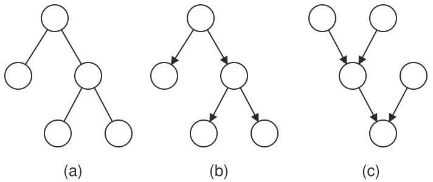
Fig. 33 Figure 8. (a) An undirected tree, (b) a directed tree, (c) a polytree, which is a tree once the arrows are dropped, so a node can have several parents.#
\(p(x) = \frac{1}{Z} \left[ \prod_{i \in V} \psi (x_i) \prod_{(i,j)\in E} \psi (x_i,x_j) \right]\)
for directed, root has individual prob and others are conditionals
can once again use evidence potentials for conditioning

Probabilistic inference on trees#
eliminate algorithm through message-passing
ordering I should be depth-first traversal of tree with f as root and all edges pointing away
message \(m_{ji}(x_i)\) from \(j\) to \(i\) =intermediate factor
2 key equations
\(m_{ji}(x_i) = \sum_{x_j} \left( \psi^E (x_j) \psi (x_i, x_j) \prod_{k \in N(j) \backslash i} m_{kj} (x_j) \right)\)
\(p(x_f \vert \bar{x}_E) \propto \psi^E (x_f) \prod_{e \in N(f)} m_{ef} (x_f)\)
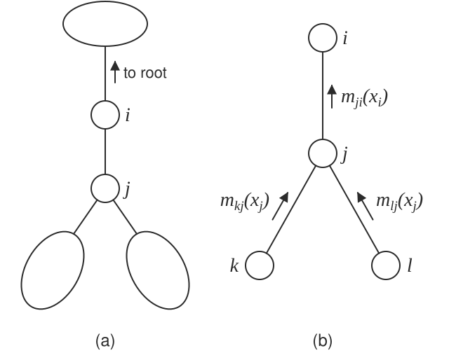
Fig. 34 Figure 9. (a) Node \(j\) and the subtrees below it, with \(i\) on the way to the root. (b) Eliminating the subtrees sends messages \(m_{kj}\) and \(m_{lj}\) into \(j\), and \(j\) then sends \(m_{ji}(x_i)\) to \(i\).#
sum-product = belief propagation - inference algorithm
computes all single-node marginals (for certain classes of graphs) rather than only a single marginal
only works in trees or tree-like graphs
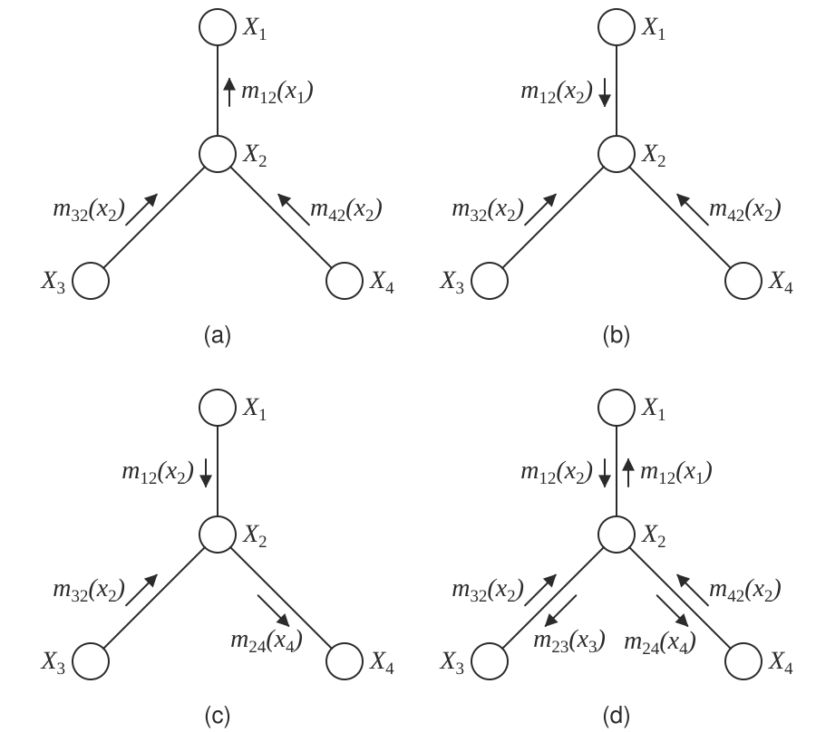
Fig. 35 Figure 10. The messages needed for the marginals of \(X_1\) (a), \(X_2\) (b) and \(X_4\) (c). Many are shared, and the full set in (d), one in each direction on every edge, gives every marginal at once.#
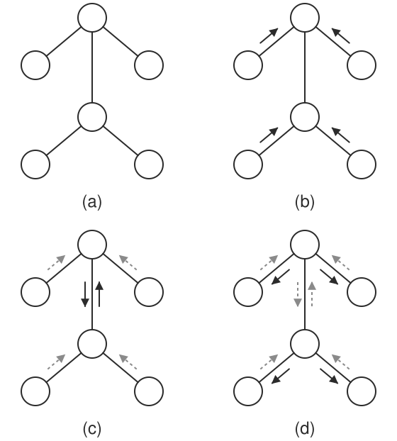
Fig. 36 Figure 11. The parallel schedule on a six-node tree. Leaves send first, internal nodes then exchange messages, and messages go back down to the leaves. Dashed arrows were sent at earlier steps.#
message-passing protocol - a node can send a message to a neighboring node when, and only when, it has received messages from all of its other neighbors (parallel algorithm)
evidence(E)
choose root
collect: send messages evidence to root
distribute: send messages root back out


Factor graphs#
A factor graph adds a node for each factor and links it to the variables the factor uses, so it shows how the distribution factorizes in more detail than the cliques do. When the result is a tree, sum-product runs on it with two kinds of messages.
factor graphs capture factorizations, not conditional independence statements
ex \(\psi (x_1, x_2, x_3) = f_a(x_1,x_2) f_b(x_2,x_3) f_c (x_1,x_3)\) factors but has no conditional independence
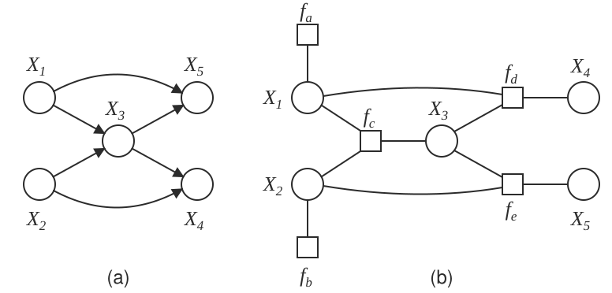
Fig. 39 Figure 14. A directed model (a) and its factor graph (b), where each factor node connects to the variables it depends on.#
\(f(x_1,...,x_n) = \prod_s f_s (x_{C_s})\)
neighborhood N(s) for a factor index s is all the variables the factor references
neighborhood N(i) for a node i is set of factors that reference \(x_i\)
provide more fine-grained representation of prob. distr.
could add more nodes to normal graphical model to do this
factor tree - if factors are made nodes, resulting undirected graph is tree
two kinds of messages (variable-> factor & factor-> variable)
run all the factor \(\to\) variables first
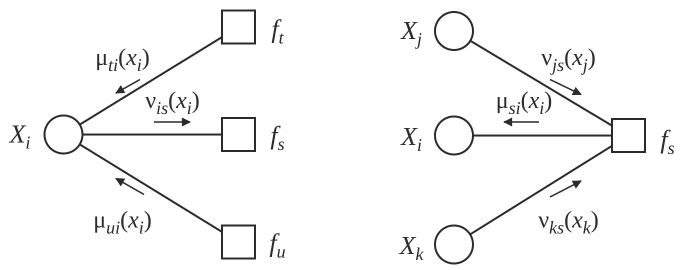
Fig. 40 Figure 15. The two kinds of messages on a factor graph, factor to variable (\(\mu\), left) and variable to factor (\(\nu\), right).#
\(p(x_i) \propto \prod_{s \in N(i)} \mu_{si} (x_i)\)
if a graph is originally a tree, there is little to be gained from factor graph framework
sometimes factor graph is factor tree, but original graph is not


Maximum a posteriori (MAP)#
Replacing the sums in elimination with maxes finds the most probable assignment instead of a marginal. Working with log probabilities avoids underflow, and on trees the same idea gives the max-product algorithm.
want \(\max_{x_F} p(x_F \vert \bar{x}_E)\)
MAP-eliminate algorithm is very similar to before
initialize - choose ordering
evidence - set evidence
update - for each take max over variable and make new factor
maximum - marginalize
products of probs tend to underflow, so take \(\max_x \log p^E (x)\)
can also derive a max-product algorithm for trees
find \(\text{argmax}_x p^E (x)\)
can solve by keeping track of maximizing values of variables in max-product algorithm
Dynamic bayesian nets#
A dynamic Bayes net repeats the same slice over time, with a transition model \(P(X_t\vert X_{t-1})\) and a sensor model \(P(E_t\vert X_t)\). The four inference problems below all reuse these two pieces, and the colors match across the equations.
dynamic bayesian nets - represents a temporal prob. model
State space model#
Filtering, prediction, smoothing and the most likely sequence all combine the same two pieces, the transition model and the sensor model. Filtering is a recursion: push the old state through the transition, weight by the sensor, and normalize.
state space model
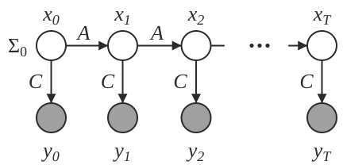
Fig. 41 Figure 16. The state space model. Hidden states \(x_t\) form a chain linked by \(A\), and each emits an observed output \(y_t\) (shaded) through \(C\).#
the SSM as a graphical model. Each vertical slice represents a time step. The top node in each slice represents the state variable x_t and the bottom node in each slice represents the observable output variable y_t
\(P(X_{0:t}, E_{1:t}) = P(X_0) \prod_{i} \cblue{\underbrace{P(X_i \vert X_{i-1}) }_{\text{transition model}}} \: \corange{\underbrace{P(E_i\vert X_i)}_{\text{sensor model}}}\)
agent maintains belief state of state variables \(X_t\) given evidence variables \(E_t\)
improve accuracy
increase order of Markov transition model
increase set of state variables (can be equivalent to 1)
hard to maintain state variables over time, want more sensors
4 inference problems (here \(\cdot\) is elementwise multiplication)
filtering = state estimation - compute \(P(X_t \vert e_{1:t})\)
recursive estimation: \(\cpurple{\underbrace{P(X_{t+1}\vert e_{1:t+1})}_{\text{new state}}} = \alpha \: \corange{\underbrace{P(e_{t+1}\vert X_{t+1})}_{\text{sensor}}} \cdot \underset{x_t}{\sum} \: \cblue{\underbrace{P(X_{t+1}\vert x_t)}_{\text{transition}}} \cdot \cgreen{\underbrace{P(x_t\vert e_{1:t})}_{\text{old state}}}\) where \(\alpha\) normalizes probs
prediction - compute \(P(X_{t+k}\vert e_{1:t})\) for \(k>0\)
\(\cpurple{\underbrace{P(X_{t+k+1} \vert e_{1:t})}_{\text{new state}}} = \sum_{x_{t+k}} \cblue{\underbrace{P(X_{t+k+1} \vert x_{t+k})}_{\text{transition}}} \cdot \cgreen{\underbrace{P(x_{t+k} \vert e_{1:t})}_{\text{old state}}}\)

smoothing - compute \(P(X_{k}\vert e_{1:t})\) for \(0 < k < t\)
2 components \(P(X_k\vert e_{1:t}) = \alpha \cpink{\underbrace{P(X_k\vert e_{1:k})}_{\text{forward}}} \cdot \cyellow{\underbrace{P(e_{k+1:t}\vert X_k)}_{\text{backward}}}\)
forward pass: filtering from \(1:t\) 2. backward pass from \(t:1\) \(\cyellow{\underbrace{P(e_{k+1:t}\vert X_k)}_{\text{sensor past k}}} = \sum_{x_{k+1}} \corange{\underbrace{P(e_{k+1}\vert x_{k+1})}_{\text{sensor}}} \cdot \cyellow{\underbrace{P(e_{k+2:t}\vert x_{k+1})}_{\text{recursive call}}} \cdot \cblue{\underbrace{P(x_{k+1}\vert X_k)}_{\text{transition}}}\) 3. this is called the forward-backward algo(also there is a separate algorithm that doesn’t use the observations on the backward pass)
most likely explanation - \(\underset{x_{1:t}}{\text{argmax}}\:P(x_{1:t}\vert e_{1:t})\)
Viterbi algorithm: \(\cpurple{\underbrace{\underset{x_{1:t}}{\text{max}} \: P(x_{1:t}, X_{t+1}\vert e_{1:t+1})}_{\text{mle x}}} = \alpha \: \corange{\underbrace{P(e_{t+1}\vert X_{t+1})}_{\text{sensor}}} \cdot \underset{x_t}{\text{max}} \left[ \: \cblue{\underbrace{P(X_{t+1}\vert x_t)}_{\text{transition}}} \cdot \cgreen{\underbrace{\underset{x_{1:t-1}}{\text{max}} \:P(x_{1:t-1}, x_{t+1}\vert e_{1:t})}_{\text{max prev state}}} \right]\)
complexity
K = number of states
M = number of observations
n = length of sequence
memory - \(nK\)
runtime - \(O(nK^2)\)
learning - form of EM
basically just count (maximizing joint likelihood of input and output)
initial state probs \(\frac{count(start \to s)}{n}\)
\(P(x'\vert x) = \frac{count(s \to s')}{count(s)}\)
\(P(y\vert x) = \frac{count (x \to y)}{count(x)}\)
HMM#
state is a single discrete process
transitions are all matrices (and no zeros in sensor model)\(\implies\) forward pass is invertible so can use constant space
online smoothing (with lag)
ex. robot localization
Kalman filtering#
The Kalman filter is filtering for a continuous, linear-Gaussian state, so every belief is Gaussian and the recursion only updates a mean and a variance. The new mean is a weighted average of the prediction and the new observation.
state is continuous
ex.
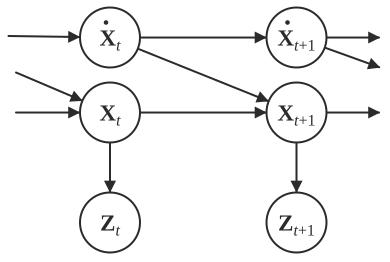
Fig. 42 Figure 17. A linear dynamical system as a Bayes net. Position \(X_t\) and velocity \(\dot X_t\) determine the next state, and only the position is measured, as \(Z_t\).#
bayesian network structure for a linear dynamical system with position X_t, velocity Ẋ_t, and position measurement Z_t
type of nodes (real-valued vectors) and prob model (linear-Gaussian) changes from HMM
1d example: random walk
state nodes: \(x_{t+1} = \cblue{Ax_t} + \corange{Gw_t}\)
output nodes: \(y_t = \cblue{Cx_t}+\corange{v_t}\)
x is linear Gaussian
w is noise Gaussian
y is linear Gaussian
doing the integral for prediction involves completing the square
properties
new mean is weighted mean of new observation and old mean
update rule for variance is independent of the observation
variance converges quickly to fixed value that depends only on \(\sigma^2_x, \sigma^2_z\)
Lyapunov eqn: evolution of variance of states
information filter - mathematically the same but different parameterization
extended Kalman filter
works on nonlinear systems
locally linear
switching Kalman filter - multiple Kalman filters run in parallel and weighted sum of predictions is used
ex. one for straight flight, one for sharp left turns, one for sharp right turns
equivalent to adding discrete “maneuver” state variable

General dbns#
Splitting a large state into several variables keeps the transition model small. Exact inference is still hard, and particle filtering approximates the belief state with weighted samples that are resampled at each step.
can be better to decompose state variable into multiple vars
reduces size of transition matrix
transient failure model - allows probability of sensor giving wrong value
persistent failure model - additional variable describing status of battery meter
exact inference - våariable elimination mimics recursive filtering
still difficult
approximate inference - modification of likelihood weighting
use samples as approximate representation of current state distr.
particle filtering - focus set of samples on high-prob regions of the state space
consistent
sample a state
sample the next state given the previous state
weight each sample by \(P(e_t \vert x_t)\)
resample based on weight
Structure learning#
conditional correlation - inverse covariance matrix = precision matrix
estimates only good when \(n >> p\)
eigenvalues are not well-approximated
often enforce sparsity
ex. threshold each value in the cov matrix (set to 0 unless greater than thresh) - this threshold can depend on different things
can also use regularization to enforce sparsity
POET doesn’t assume sparsity
Key ideas
A graphical model factors the joint distribution into local pieces, and missing edges are conditional independence statements.
In a Bayesian network independence is read off with d-separation. A v-structure blocks a path unless its child or a descendant of it is observed.
Exact inference sums out variables. Its cost is exponential in the largest clique the elimination order creates, and on a tree message passing gives every marginal in two passes.
When exact inference is too expensive, sampling (likelihood weighting, MCMC) or variational inference approximates it.
A dynamic Bayes net reuses one transition model and one sensor model over time. HMMs and Kalman filters do exact inference for discrete and linear-Gaussian states, and particle filters approximate it otherwise.